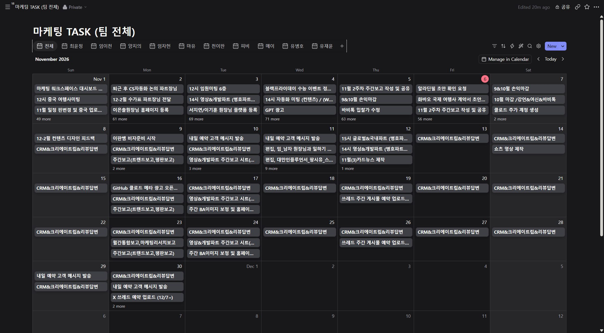
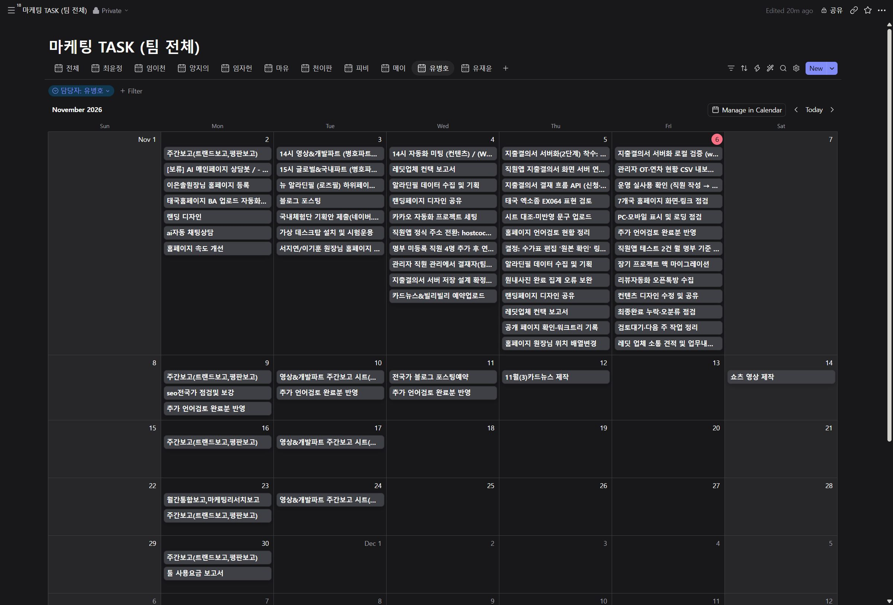

마케팅팀 업무 캘린더 1차 보고
2026년 11월 6일 기준
요약
- 팀 업무 시트(2026_BBS_MKT_Task_Log_Nov&Dec)의 11월 업무 455건(팀원 10명)을 노션형 업무 캘린더로 옮겼습니다.
- '전체' 탭에서는 팀 전체 일정을, 이름 탭에서는 팀원별 일정을 볼 수 있습니다.
- 업무가 많은 날은 하루 3건까지 보이고, 'N more'를 누르면 그 주 업무가 모두 펼쳐집니다.
현재 상태
- 지금 화면은 11월 6일 업무 시트를 옮긴 시험본입니다.
- 업무 시트와의 양방향 자동 동기화(5분 주기)는 서버를 올린 뒤 연결합니다. 연결하면 시트와 캘린더 중 어느 쪽에서 고쳐도 양쪽에 반영되도록 만들 예정입니다.
- 노션과 화면이 비슷한 오픈소스 도구(Litpage, MIT 라이선스)를 직접 설치해 쓰는 방식이라, 인원수에 따른 구독료 없이 서버 비용만 듭니다.
다음 단계
- 서버 배포 (PC를 꺼도 동작)
- 업무 시트 양방향 동기화 연결
- 팀원별 계정 발급
- 달력 화면 한국어 적용, 모바일 화면, 바로가기 모음 등 추가 기능
업무 캘린더 화면
탭을 누르면 해당 팀원의 11월 일정이 보입니다.

업무가 많은 날 펼쳐 보기
'N more'를 누르면 그 주 업무가 모두 펼쳐집니다. (유병호, 11월 첫 주)크게 보기
